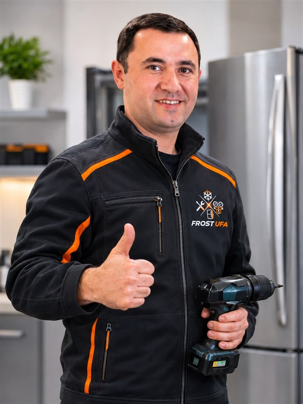
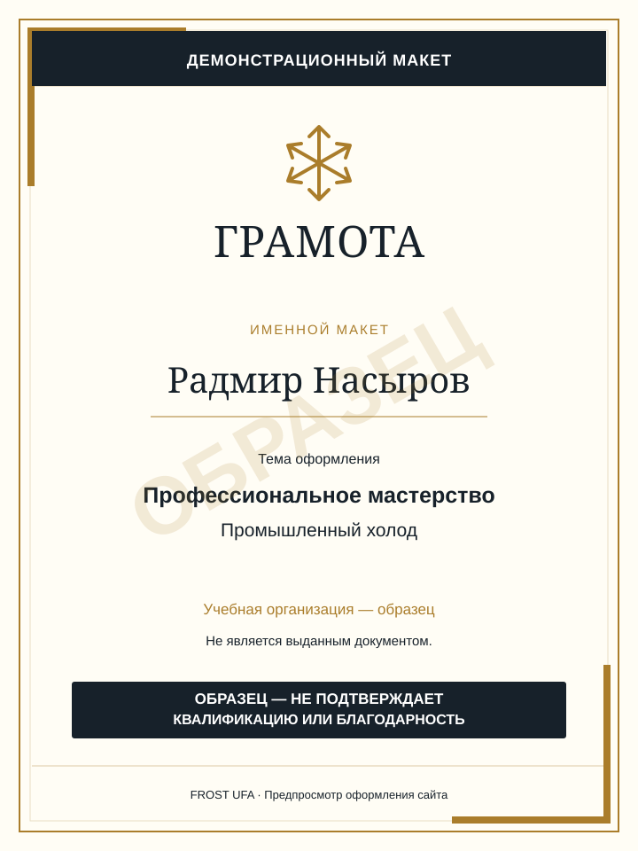
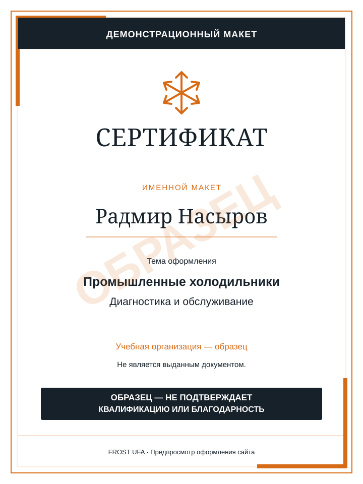
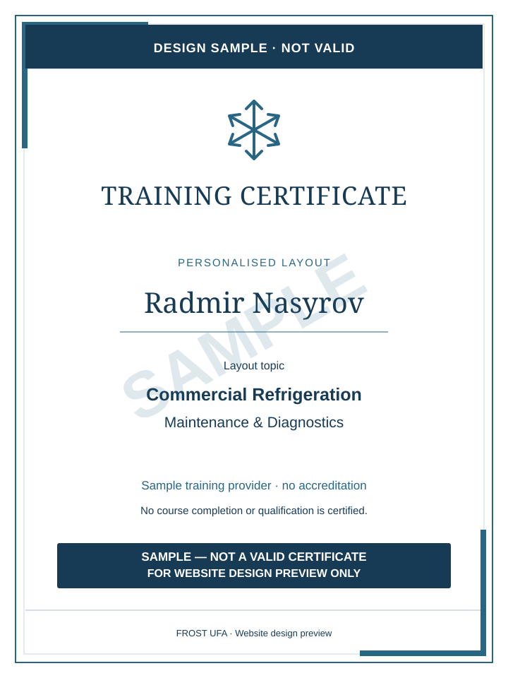

Радмир Насыров
Промышленные холодильники · Общий опыт 8 лет, из них 6 лет — промышленный холод

О себе
Меня зовут Радмир Насыров. Я мастер FROST UFA. Мой общий опыт в ремонте холодильников — 8 лет, из них 6 лет работаю с промышленным холодильным оборудованием.
По образованию я экономист. В ремонт пришёл неожиданно: у меня дома сломался холодильник, и я вызвал мастера. Мы познакомились, подружились, а мне стало интересно, как устроена эта техника. Так знакомство с мастером привело меня в команду.
Со временем основным направлением стал промышленный холод. В работе для меня важно разобраться в причине неисправности, объяснить, какие работы нужны, и проверить результат после ремонта.
Грамоты и сертификаты
Демонстрационные макеты. Показываем оформление раздела. Эти изображения не подтверждают обучение, квалификацию или получение благодарностей. Настоящие сканы будут добавлены позже.
Именные документы

ОбразецИменная грамотаПрофессиональное мастерство
ОбразецСертификатПромышленные холодильники
ОбразецTraining certificateCommercial RefrigerationБлагодарности команде FROST UFA
Общие для команды образцы писем от заказчиков.
 ОбразецБлагодарность FROST UFAОбслуживание оборудования
ОбразецБлагодарность FROST UFAОбслуживание оборудования ОбразецБлагодарность FROST UFAСотрудничество с командой
ОбразецБлагодарность FROST UFAСотрудничество с командойНужна помощь с холодильником?
Расскажите о технике и поломке — обсудим выезд.